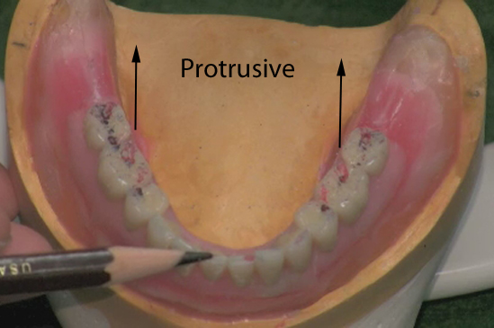

Selective Grinding of Anatomic Teeth in a Lingualized Balanced Occlusion
In the first step of selective grinding, cusp form teeth are altered by reshaping to obtain balanced occlusion when the jaws are in centric relation. Occlusal balance in a lateral direction is obtained by having all of the posterior teeth and the canines in contact on the working side and posterior contact only on the non-working side. In protrusive balance the anterior teeth should make incisal edge contact at the same time that the tips of the lingual cusps of the posterior teeth contact.
Adjust the horizontal and lateral condylar inclinations of the articulator to the settings dictated by a protrusive interocclusal maxillomandibular relation record. The incisal pin should be raised off the table and secured.
With the condylar elements against the centric relation stops, close the articulator until the posterior teeth are in contact. The anterior teeth should not be in contact. Examine the lingual cusps of the maxillary posterior teeth and the fossae and marginal ridges of the mandibular posterior teeth. Record the area or areas of premature contact with articulating paper. The contacts may be in varying amounts and may involve more than one cusp or tooth. (Fig 01)
Fig 01
Record any premature contacts with articulating paper and analyze the cusp tips to see if one is causing an excessive mark due to being off the plane dramatically. That single cusp may need to be reduced before proceeding. If a cusp is slightly high in the centric position, deepen the fossae or the marginal ridges. (Fig 02)
Fig 02
After all interceptive contacts have been equalized in the centric position, do not reduce the maxillary lingual cusp and do not deepen the fossa or marginal ridge of any tooth. This will maintain the centric holding cusp relationships. (Fig 03 and 04)
Fig 03
Fig 04
To refine the teeth to retain contact when the articulator is being moved to and from centric and eccentric position additional adjustments are needed. Make the initial adjustments to both the working and non-working inclines in one direction, then switch to the other direction. (Fig 05)
Fig 05 Initial marks during left movement
On the working side, reduce the lingual inclines of the lingual cusps of the maxillary teeth and widen the tracks those cusps move through on the mandibular teeth by reducing lingual cusps and marginal ridges. On the non-working side, reduce the inner inclines of the mandibular buccal cusps or marginal ridges. (Fig 06)
Fig 06 Final marks for left mandibular movement
To achieve balance in protrusive excursion, reduce the distal inclines of the maxillary cusps and the mesial inclines of the mandibular cusps or marginal ridges. (Fig 07)

Fig 07
Do not adjust centric holding areas while making these adjustments. After completing the selective grinding procedures to establish and maintain the desired occlusion refine the occlusal anatomy.
Adjustment is complete when smooth movement is obtained and anterior teeth make "kissing" contact in all excursive movements. (Fig 08 and Fig 09)